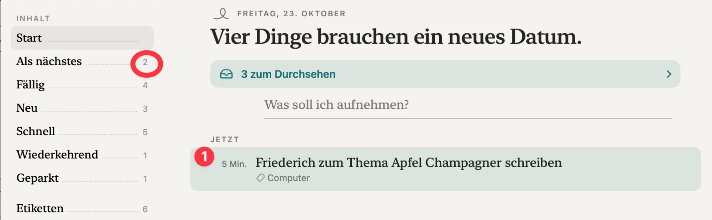

<title>Startseite Zahl Entwurf</title>
<meta name="claude:viewport-fit-sides" content="cover">
<link rel="stylesheet" href="https://fonts.googleapis.com/css2?family=Newsreader:opsz,wght@6..72,400;6..72,500&family=Instrument+Sans:wght@400;500;600&display=swap">
<style>
/* Layout: ein Befund oben, dann „Heute“ neben zwei Entwürfen, jeder hell und dunkel, im Papier der App. */
:root {
  --page: #ECEBE5;
  --ink: #232420;
  --quiet: #6B6C64;
  --rule: #D5D4CC;
  --paper: #F4F3EE;
  --p-ink: #1F201C;
  --p-quiet: #77786F;
  --p-accent: #0F6E73;
  --p-row: #DDE5E1;
  --p-rule: #D9D8D0;
  --serif: "Newsreader", "New York", Georgia, serif;
  --sans: "Instrument Sans", -apple-system, "Helvetica Neue", sans-serif;
}
@media (prefers-color-scheme: dark) {
  :root:not([data-theme="light"]) { --page: #0F100E; --ink: #E7E7E1; --quiet: #9A9B93; --rule: #2A2B27; color-scheme: dark; }
}
:root[data-theme="dark"] { --page: #0F100E; --ink: #E7E7E1; --quiet: #9A9B93; --rule: #2A2B27; color-scheme: dark; }

body { background: var(--page); color: var(--ink); font-family: var(--sans); font-size: 15px; line-height: 1.5; margin: 0;
  padding-block: 32px 64px; padding-left: max(16px, env(safe-area-inset-left, 0px)); padding-right: max(16px, env(safe-area-inset-right, 0px)); }
main { max-width: 1180px; margin: 0 auto; display: flex; flex-direction: column; gap: 40px; }
h1 { font-family: var(--serif); font-weight: 500; font-size: 32px; line-height: 1.15; margin: 0 0 8px; text-wrap: balance; }
h2 { font-family: var(--serif); font-weight: 500; font-size: 22px; margin: 0 0 4px; }
p { margin: 0; max-width: 68ch; }
.lead { color: var(--quiet); }
.facts { display: grid; grid-template-columns: repeat(auto-fit, minmax(150px, 1fr)); gap: 12px; margin: 0; padding: 0; list-style: none; }
.facts li { border-top: 1px solid var(--rule); padding-top: 8px; font-size: 13px; color: var(--quiet); }
.facts b { display: block; font-family: var(--serif); font-weight: 500; font-size: 26px; color: var(--ink); font-variant-numeric: tabular-nums; }
.facts .hit b { color: #B8412F; }
section { display: flex; flex-direction: column; gap: 14px; }
.pair { display: grid; grid-template-columns: repeat(auto-fit, minmax(340px, 1fr)); gap: 16px; }
.cap { font-size: 12px; letter-spacing: .08em; text-transform: uppercase; color: var(--quiet); margin-bottom: 6px; }
.verdict { border-left: 3px solid var(--p-accent); padding: 2px 0 2px 12px; max-width: 68ch; }
.shot { background: var(--paper); border-radius: 10px; padding: 8px; }
.shot img { display: block; width: 100%; height: auto; border-radius: 6px; }

/* Papier der App: Hell und Dunkel je Mock, unabhängig vom Seitenthema */
.mock { --paper: #F4F3EE; --p-ink: #1F201C; --p-quiet: #77786F; --p-accent: #0F6E73; --p-row: #DDE5E1; --p-rule: #D9D8D0; --p-select: #E7E5DE;
  background: var(--paper); color: var(--p-ink); border-radius: 10px; padding: 16px 18px 18px; font-family: var(--serif); min-width: 0; }
.mock.dark { --paper: #171816; --p-ink: #ECECE6; --p-quiet: #8E8F88; --p-accent: #5FC4C9; --p-row: #243130; --p-rule: #2C2D29; --p-select: #262724; }
.mock .grid { display: grid; grid-template-columns: 150px 1fr; gap: 20px; }
@media (max-width: 520px) { .mock .grid { grid-template-columns: 1fr; } }
.side { font-size: 15px; }
.side .lbl { font: 600 10px/1 var(--sans); letter-spacing: .14em; color: var(--p-quiet); margin-bottom: 8px; }
.side .it { display: flex; align-items: baseline; gap: 4px; padding: 3px 6px; border-radius: 6px; }
.side .it.on { background: var(--p-select); }
.side .it i { flex: 1; border-bottom: 1px dotted var(--p-rule); transform: translateY(-3px); }
.side .it u { text-decoration: none; font: 12px var(--sans); color: var(--p-quiet); font-variant-numeric: tabular-nums; }
.side .it.hl u { color: var(--p-ink); font-weight: 600; }
.date { font: 600 10px/1 var(--sans); letter-spacing: .14em; color: var(--p-quiet); }
.head { font-size: 26px; font-weight: 500; line-height: 1.12; margin: 6px 0 12px; text-wrap: balance; }
.inbox { background: var(--p-row); color: var(--p-accent); font: 600 13px var(--sans); border-radius: 10px; padding: 8px 12px; display: flex; justify-content: space-between; margin-bottom: 10px; }
.write { color: var(--p-quiet); font-size: 16px; border-bottom: 1px solid var(--p-rule); padding: 4px 0 6px 14px; margin-bottom: 14px; }
.zone { display: flex; align-items: baseline; gap: 8px; font: 600 10px/1 var(--sans); letter-spacing: .14em; color: var(--p-quiet); margin: 0 0 6px; }
.zone b { font: 600 12px var(--sans); letter-spacing: 0; color: var(--p-ink); font-variant-numeric: tabular-nums; }
.zone.hl b { background: var(--p-accent); color: var(--paper); border-radius: 9px; padding: 2px 7px; }
.row { display: grid; grid-template-columns: 64px 1fr; gap: 8px; padding: 7px 8px; border-radius: 10px; }
.row.sel { background: var(--p-row); }
.row .m { font: 12px var(--sans); color: var(--p-quiet); text-align: right; padding-top: 3px; line-height: 1.25; }
.row .m em { display: block; font-style: normal; font-weight: 600; color: var(--p-accent); }
.row .m small { display: block; font-size: 11px; opacity: .8; }
.row .t { font-size: 16px; line-height: 1.25; }
.row .s { font: 12px var(--sans); color: var(--p-quiet); margin-top: 1px; }
.fold { font: 12px var(--sans); color: var(--p-quiet); padding: 8px 8px 0 72px; display: flex; gap: 6px; align-items: center; }
.fold svg { width: 10px; height: 10px; stroke: currentColor; fill: none; stroke-width: 2; }
.note { font-size: 13px; color: var(--quiet); max-width: 68ch; }
</style>

<main>
  <header>
    <h1>Eine Zahl am Symbol, dieselbe Zahl in der App</h1>
    <p class="lead">Ticket 637, Mac, Freitag 23. Oktober. Die Startseite zeigt unter „Jetzt“ eine Aufgabe, das Symbol zählt fünf. Hier sind zwei Entwürfe, in denen die Zahl über „Jetzt“ steht und an „Start“ in der Seitenleiste.</p>
  </header>

  <section>
    <h2>Heute</h2>
    <ul class="facts">
      <li class="hit"><b>1</b>Zeilen unter „Jetzt“</li>
      <li><b>2</b>„Als nächstes“</li>
      <li><b>4</b>„Fällig“, alle brauchen ein neues Datum</li>
      <li class="hit"><b>5</b>Symbol am Dock</li>
    </ul>
    <p class="note">Nachgestellt im Test mit deinen Zahlen: Jetzt 1, Symbol 5, Fällig 4, Als nächstes 2. Keine Zahl ist die 5, und die vier Aufgaben stehen auf der Startseite nirgends.</p>
    <div class="shot"></div>
  </section>

  <section>
    <div>
      <div class="cap">Entwurf A · empfohlen</div>
      <h2>Alle fünf stehen unter „Jetzt“</h2>
    </div>
    <p>Die Zahl 5 steht über „Jetzt“ und an „Start“. Die vier mit verstrichener Frist stehen unten, ohne Rot, mit „Neues Datum“ am Rand. Dein Eingereihtes steht vorn.</p>
    <div class="pair">
      <div class="mock">
        <div class="grid">
          <div class="side">
            <div class="lbl">INHALT</div>
            <div class="it on hl">Start<i></i><u>5</u></div>
            <div class="it">Als nächstes<i></i><u>2</u></div>
            <div class="it">Fällig<i></i><u>4</u></div>
            <div class="it">Neu<i></i><u>3</u></div>
          </div>
          <div>
            <div class="date">FREITAG, 23. OKTOBER</div>
            <div class="head">Vier Dinge brauchen ein neues Datum.</div>
            <div class="inbox"><span>3 zum Durchsehen</span><span>›</span></div>
            <div class="write">Was soll ich aufnehmen?</div>
            <div class="zone hl">JETZT <b>5</b></div>
            <div class="row sel"><div class="m">5 Min.</div><div><div class="t">Friederich zum Thema Apfel Champagner schreiben</div><div class="s">Computer</div></div></div>
            <div class="row"><div class="m"><em>Neues Datum</em><small>war Di</small></div><div><div class="t">Altpapier und Altglas zur Mülldeponie bringen</div><div class="s">15 Min.</div></div></div>
            <div class="row"><div class="m"><em>Neues Datum</em><small>war Mo</small></div><div><div class="t">Steuerunterlagen sortieren</div><div class="s">30 Min.</div></div></div>
            <div class="row"><div class="m"><em>Neues Datum</em><small>war Mo</small></div><div><div class="t">Fahrradkette ölen</div><div class="s">5 Min.</div></div></div>
            <div class="row"><div class="m"><em>Neues Datum</em><small>war So</small></div><div><div class="t">Geburtstagskarte für Oma</div><div class="s">10 Min.</div></div></div>
          </div>
        </div>
      </div>
      <div class="mock dark">
        <div class="grid">
          <div class="side">
            <div class="lbl">INHALT</div>
            <div class="it on hl">Start<i></i><u>5</u></div>
            <div class="it">Als nächstes<i></i><u>2</u></div>
            <div class="it">Fällig<i></i><u>4</u></div>
            <div class="it">Neu<i></i><u>3</u></div>
          </div>
          <div>
            <div class="date">FREITAG, 23. OKTOBER</div>
            <div class="head">Vier Dinge brauchen ein neues Datum.</div>
            <div class="inbox"><span>3 zum Durchsehen</span><span>›</span></div>
            <div class="write">Was soll ich aufnehmen?</div>
            <div class="zone hl">JETZT <b>5</b></div>
            <div class="row sel"><div class="m">5 Min.</div><div><div class="t">Friederich zum Thema Apfel Champagner schreiben</div><div class="s">Computer</div></div></div>
            <div class="row"><div class="m"><em>Neues Datum</em><small>war Di</small></div><div><div class="t">Altpapier und Altglas zur Mülldeponie bringen</div><div class="s">15 Min.</div></div></div>
            <div class="row"><div class="m"><em>Neues Datum</em><small>war Mo</small></div><div><div class="t">Steuerunterlagen sortieren</div><div class="s">30 Min.</div></div></div>
            <div class="row"><div class="m"><em>Neues Datum</em><small>war Mo</small></div><div><div class="t">Fahrradkette ölen</div><div class="s">5 Min.</div></div></div>
            <div class="row"><div class="m"><em>Neues Datum</em><small>war So</small></div><div><div class="t">Geburtstagskarte für Oma</div><div class="s">10 Min.</div></div></div>
          </div>
        </div>
      </div>
    </div>
    <p class="note">Die drei Titel unter dem ersten sind erfunden, damit die Spalte voll aussieht. Die Zeilen folgen der Regel der App: Fünf Zeilen stehen, ab der sechsten klappt „N weitere“ zu.</p>
  </section>

  <section>
    <div>
      <div class="cap">Entwurf B · Alternative</div>
      <h2>Die vier liegen zugeklappt in „Jetzt“</h2>
    </div>
    <p>Die Zahl 5 steht auch hier über „Jetzt“ und an „Start“. Die Liegengebliebenen sind eine einzige graue Zeile. Ein Tipp klappt sie auf. Das ist ruhiger, aber die Aufgaben sind erst nach dem Tipp zu sehen.</p>
    <div class="pair">
      <div class="mock">
        <div class="grid">
          <div class="side">
            <div class="lbl">INHALT</div>
            <div class="it on hl">Start<i></i><u>5</u></div>
            <div class="it">Als nächstes<i></i><u>2</u></div>
            <div class="it">Fällig<i></i><u>4</u></div>
            <div class="it">Neu<i></i><u>3</u></div>
          </div>
          <div>
            <div class="date">FREITAG, 23. OKTOBER</div>
            <div class="head">Vier Dinge brauchen ein neues Datum.</div>
            <div class="inbox"><span>3 zum Durchsehen</span><span>›</span></div>
            <div class="write">Was soll ich aufnehmen?</div>
            <div class="zone hl">JETZT <b>5</b></div>
            <div class="row sel"><div class="m">5 Min.</div><div><div class="t">Friederich zum Thema Apfel Champagner schreiben</div><div class="s">Computer</div></div></div>
            <div class="fold">4 brauchen ein neues Datum <svg viewBox="0 0 10 10"><path d="M1 3l4 4 4-4"/></svg></div>
          </div>
        </div>
      </div>
      <div class="mock dark">
        <div class="grid">
          <div class="side">
            <div class="lbl">INHALT</div>
            <div class="it on hl">Start<i></i><u>5</u></div>
            <div class="it">Als nächstes<i></i><u>2</u></div>
            <div class="it">Fällig<i></i><u>4</u></div>
            <div class="it">Neu<i></i><u>3</u></div>
          </div>
          <div>
            <div class="date">FREITAG, 23. OKTOBER</div>
            <div class="head">Vier Dinge brauchen ein neues Datum.</div>
            <div class="inbox"><span>3 zum Durchsehen</span><span>›</span></div>
            <div class="write">Was soll ich aufnehmen?</div>
            <div class="zone hl">JETZT <b>5</b></div>
            <div class="row sel"><div class="m">5 Min.</div><div><div class="t">Friederich zum Thema Apfel Champagner schreiben</div><div class="s">Computer</div></div></div>
            <div class="fold">4 brauchen ein neues Datum <svg viewBox="0 0 10 10"><path d="M1 3l4 4 4-4"/></svg></div>
          </div>
        </div>
      </div>
    </div>
  </section>

  <section>
    <h2>Was gleich bleibt</h2>
    <p>Das Symbol zählt weiter „Fällig“ plus „Als nächstes“, jede Aufgabe einmal. „Fällig 4“ und „Als nächstes 2“ bleiben die Zahlen ihrer Listen. Die Überschrift nennt weiter, wie viele ein neues Datum brauchen. Neu ist nur, dass die Startseite diese Aufgaben zeigt und die 5 darüber steht.</p>
  </section>
</main>
